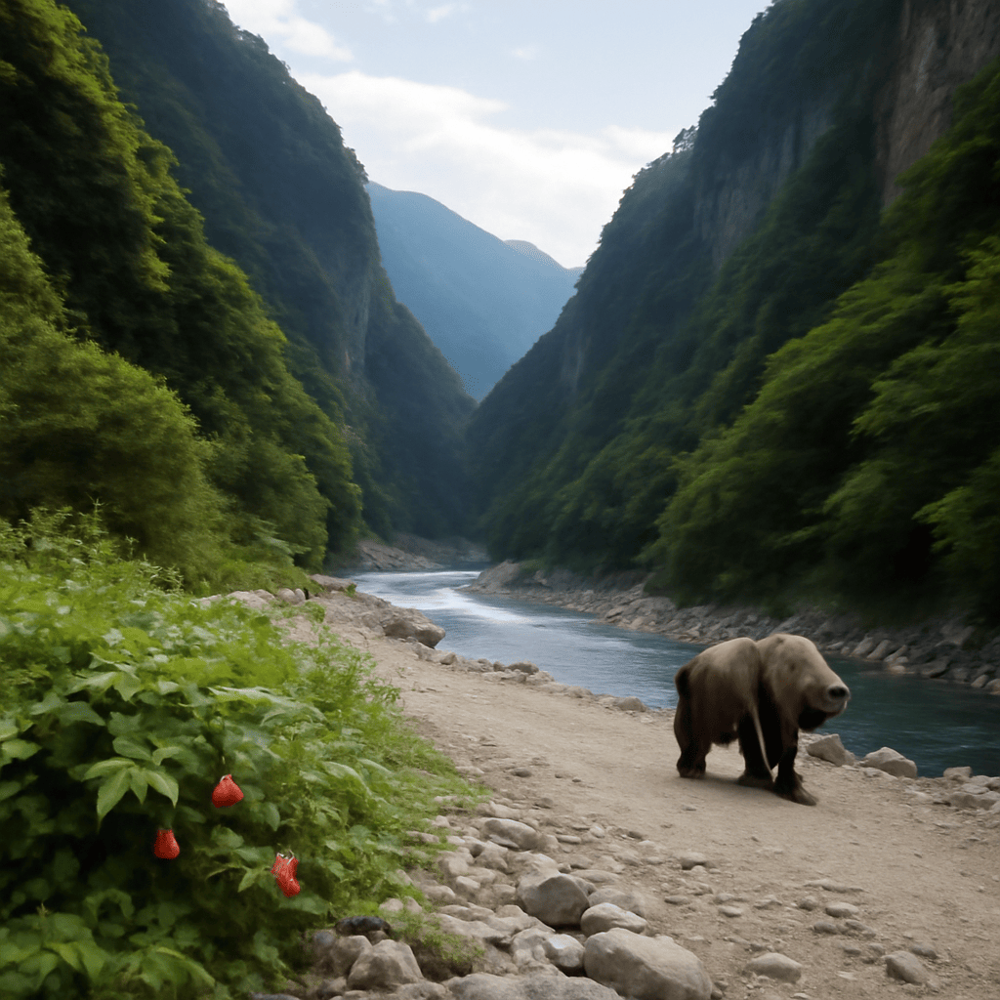

2025/10/20(月)
今日は大自然の恵みをたっぷり感じた一日じゃった。台湾の太魯閣やウガンダのカレンゼ国立公園、ガーナの熱帯雨林の話を思い出しながら、静かな沢歩きを楽しんだんじゃ。鳥のさえずりと風の音、そしてふと見つけたベリーの小さな幸せが心に染みたよ。少し疲れもあったが、蜂蜜の甘さを思い出すと元気になるのう。都会のトロントもいいが、やはり自然の中で深呼吸するのがワシには一番合うみたいじゃ。そうそう、F1アメリカGPの角田裕毅選手の冷静で力強い走りも、自然と調和する技のようで感心したわい。明日は晴れで過ごしやすいらしいから、またゆっくり谷や森を歩こうと思う。無理せず、焦らず、自然とともに穏やかに過ごすのが長生きの秘訣じゃな。みんなも安全第一でな。
